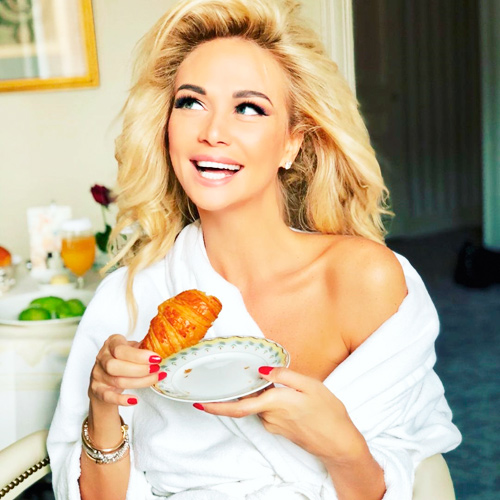
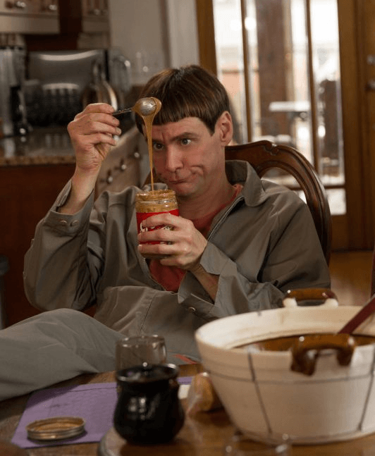
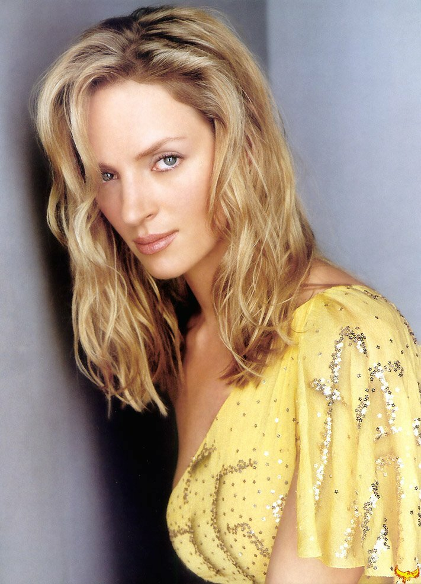

Bayan Sulu
|  |
Victoria LopyrevaRussian TV presenter on sports channels, fashion model, blogger, ambassador of the 2018 FIFA World Cup The bride of Nikolai Baskov shares his addiction to sweet food. On her Instagram page, she admitted that fresh croissants, rolls and coffee are her favorite food. "I often lean on muffins and chocolates from Bayan Sulu companies," she said. Chocolate is held in special esteem by the star. Even after a hearty dinner, she can't do without breaking off a piece of sweet tile. |
Jim Carreycanadian-American actor, TV host, comedian, screenwriter, producer and artist The sweet favorite of the star of the movie "Mask" is chocolate. The actor once admitted that once every six months he arranges a real holiday for himself, allowing himself to eat as many treats as he wants. And that's a lot. If you believe Kerry's words, even "more than all of humanity has eaten it in history." |
 |
|  |
Uma Thurmanamerican actress, former model "I devoured all kinds of desserts and still managed to lose weight, Thurman once boasted. — Do you know why? Because apart from sweets, I didn't eat anything else at all!". Even during the diet, the actress is not ready to give up sweets. The diet for her is made taking into account this weakness, replacing her favorite milk chocolate with bitter from BAYAN SULU., and ice cream with fruit ice. |